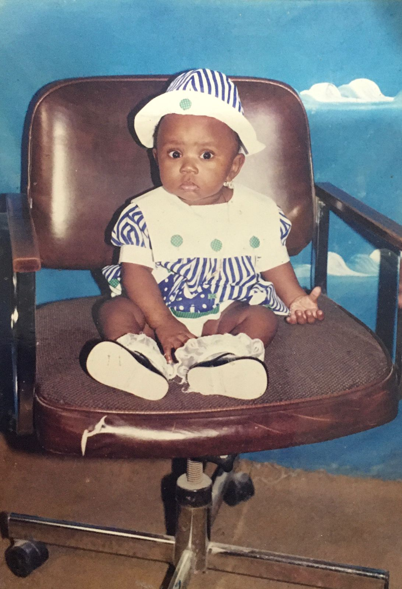
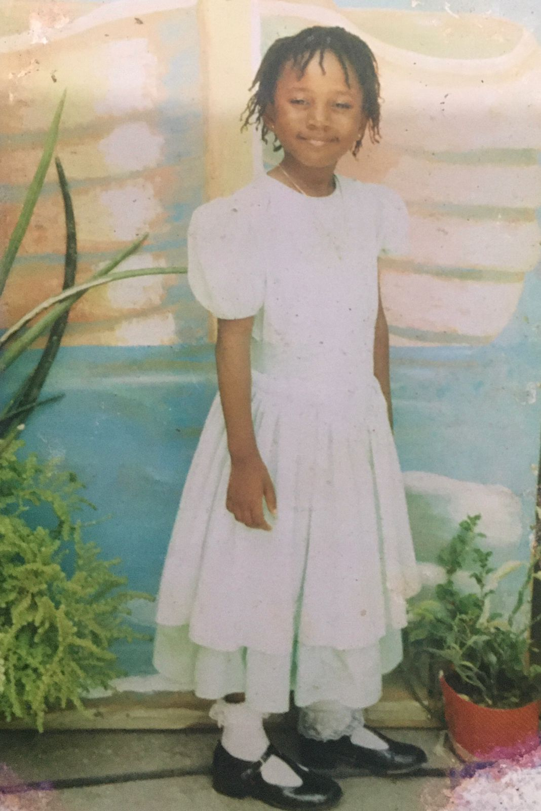
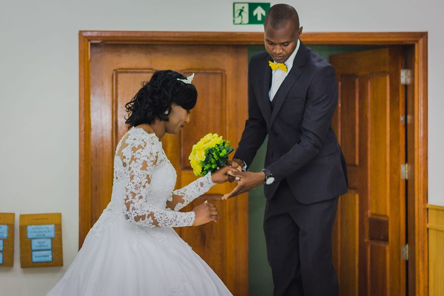

MINHA BIOGRAFIA
BIANDA WOOBIE SAINT AUBIN DESTIN
Ver é saber, querer é poder e ousar é ter!!!
Sexo:
FemininoEstado civil:
CasadoCônjuge:
BoazIrmãos:
Horly e BelinessaPais:
Legrand e SoniaData de nascimento:
24/12/1995PaÃs de nascimento:
República do HaitiPaÃs atual:
BrasilCidades que já morei no Brasil:
Navegantes SC, Florianópolis SC e São Paulo SP.PaÃs que já morei:
República do Haiti até 2010, República Dominicana até 2014 e Brasil até hoje.Escolaridade:
Cursando ensino superior em Administração.Experiência profissional:
Auxiliar de cozinha, atendente de balcão, Auxiliar operacional, Assistente de Remessa Expressa, Estagiária administrativa, Estagiária de Recursos humanos.Meus cursos técnicos:
- Informática Básica – SENAI – 80 horas.
- Excel do básico ao avançado - UDEMY - 8 horas.
- Assistente de Administração Financeira – Prepara Cursos - 48 horas.
- Liderança – Prepara Cursos - 48 horas
- Técnico em Secretariado – INFOTEP– 800 horas
- Técnico em Digitação – INFOTEP– 80 horas
- Técnico em Hotelaria e Turismo – INCOTE – 800 horas
- Técnico em Estética – INFOTEP – 300 horas
- Eletricista Instalador – SENAI – 160 horas
- NR10 – SASECOP – 40 horas
Idiomas:
Português, francês, espanhol e crioulo haitiano.Hobbies:
Ler Biografias, escrever meu dia a dia e ver filmes.Objetivo para 2021-2022:
Me formar como bacharelada em administração. Finalizar com sucesso o ciclo do programa da Toti como desenvolvedora, ingressar na área profissionalmente, e me integrar ao curso de engenharia da computação. Desejo muito me tornar uma profissional neste âmbito e dominar o que eu faço. Também planejo começar um curso de inglês com foco em carreira. Amo trabalhar com pessoas e números, agreguei uma nova paixão que é a tecnologia. Não é fácil, porém estou muito confiante e determinada. Me esforçarei muito para conseguir.Algumas fotos minhas:
- Bebezinha bochechuda💙

- Na nossa primeira casa😍
- Na minha garduação do pré-escolar🤓

- Na República Dominicana😻
- Primeiro emprego no Brasil🥰
- Um dos dias mais felizes da minha vida😍❤️😍

- Podemos ser felizes não importa o lugar❤️